4px 기초 값, 밤사이 진행 결과, 10-27 낮 Platform 정리
2026-10-27 · 브랜치 feat/surface-depth · push·PR 없음. 진행 기록은 docs/reports/2026-10-27-overnight-progress.ko.md.
0. 2026-10-27 낮 작업과 어제 저녁 대비 상세 비교
10:17~16:57 · 브랜치 feat/surface-depth · push·PR 없음. 이 절이 가장 최신이다. 아래 "최종 결과(밤사이)"와 1~7절은 밤사이 기록이다.
0-1. Simon이 확인할 것
- push와 PR 나누기:
refactor/space-props-and-removable-list→fix/broken-controls→feat/surface-depth가 쌓여 있다. - CI 시각 기준선 승인: 거의 모든 화면이 바뀌었다(아래 0-4). 로컬에서는 갱신하지 않았다.
- 사이드바 메뉴 이름: "Classes"와 페이지 제목 "Class" 중 하나로 맞추기.
- Settings 모달 안의 입력칸·표 폭(약 15곳): 아직 팝업 크기 토큰을 쓴다. 레이아웃 크기 토큰으로 옮길지.
- 4px 밖의 표 열 폭 3개(Catalog 표 190·116·124px)를 맞출지.
- 숫자 입력칸 값이 잘리는 문제(0-5): 고칠지와 방식.
- Edge와 공용 컴포넌트의 옛 글자 크기·간격 이름 정리를 이어서 할지(이번 범위는 Platform).
0-2. 커밋
| 시각 | 커밋 | 내용 |
|---|---|---|
| 10:17 | 7e87672 | feat(platform-pages): Dashboard 본문을 띄운 카드에서 화면에 붙은 영역으로 바꾼다 |
| 10:38 | 08d8e96 | feat(platform-pages): Login·Signup·Create Project에 단일 폼 화면 간격과 보이는 라벨을 적용한다 |
| 11:12 | 77615b7 | style(platform-pages): 로그인·회원가입 라벨을 Create Project와 같게, 주 버튼을 solid로 바꾼다 |
| 11:33 | 69dcf63 | style(platform-pages): Create Project 섹션을 상자 대신 제목과 선으로 나눈다 |
| 12:34 | 1e1fa48 | feat(platform-pages): 앱 전체 사이드바로 Platform 작업 화면을 감싸는 PlatformAppShell을 추가한다 |
| 13:34 | 49d2fec | fix: Class 펼치기 버튼을 칩 줄 앞에 두고 앱 사이드바 접기 버튼 이름을 구분한다 |
| 14:10 | c7885f8 | style: Settings 모달 섹션을 상자 대신 제목과 선으로 나눈다 |
| 15:04 | 8ca37dc | feat(tokens): 글자 역할 토큰을 만들고 Platform 페이지 글자 크기를 역할로 바꾼다 |
| 16:11 | b95abdc | refactor(platform-pages): 중복 컴포넌트를 공용으로 바꾸고 팝업 크기를 빌려 쓰던 레이아웃 폭을 옮긴다 |
| 16:57 | 50c427d | refactor(platform-pages): Platform 페이지의 옛 간격 토큰을 같은 값의 4px 이름으로 바꾼다 |
모든 커밋 뒤에 타입·린트·단위(492)·정적 검사·패키지 빌드·공개 export·전체 Storybook(888)을 통과했다. 화면이 바뀌지 않아야 하는 커밋(8ca37dc, 50c427d, b95abdc의 크기 토큰 부분)은 전체 스토리 픽셀 비교로 확인했고, 다르게 나온 스토리는 양쪽 빌드에서 4~6번 다시 찍어 같은 빌드끼리도 흔들리는 노이즈임을 확인했다. 한계: 비교는 화면 위쪽 900px만 찍으므로 그 아래(대시보드 분석 카드)는 따로 쟀다.
| 위계 검사(Platform 128 스토리) | 어제 아침 | 지금 |
|---|---|---|
| DOM 구조 기준 위반 | — | 0 |
| 위치 기준 같음 / 역전 | 81 / 84 | 2 / 2 |
0-3. 변경별 설명
Dashboard 본문을 화면에 붙은 영역으로 (7e87672)
Platform 128개 스토리를 검사해 페이지 영역을 카드로 나누는 화면이 Dashboard뿐임을 확인했다. 본문 "Project Overview"가 좌우 20px 띄운 둥근 카드(16px, 그림자)였고, 공용 appShell 바탕에 원형 그라데이션이 있었다. 본문을 화면 끝까지 붙이고 도구 막대와 본문을 1px 선으로 나눴다. 위젯은 그대로 두려고, 아무것도 그리지 않고 깊이 1로만 세는 SurfaceRegion을 추가해 위젯 모서리를 12px로 유지했다.
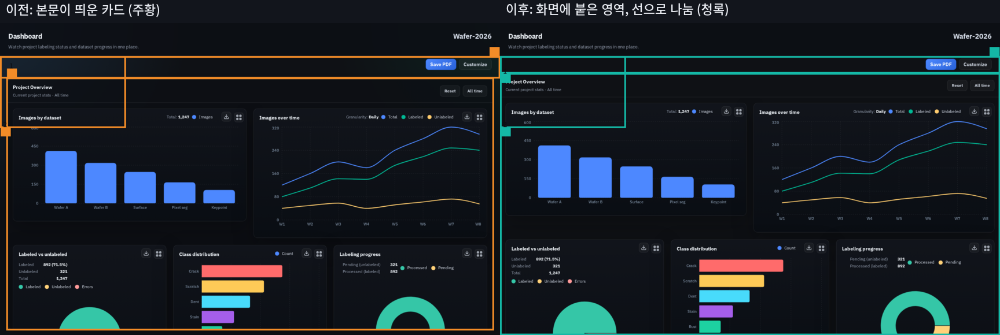
Login · Signup · Create Project: 단일 폼 화면 간격 (08d8e96, 77615b7, 69dcf63)
세 화면이 작업 화면용 조밀한 간격을 쓰고 있었다. 할 일이 하나뿐인 폼 화면이므로 넉넉한 간격으로 바꿨다.
| 위치 | 이전 | 이후 |
|---|---|---|
| 상자 안쪽 | 16 | 32 |
| 로고 → 상자, 제목 → 첫 칸, 마지막 칸 → 버튼 | 8 / 12 / 8 | 24 |
| 칸 사이 | 8 | 16 |
| 라벨 → 칸 | 라벨 없음 | 8 |
| 버튼 → 하단 링크 | 12 | 16 |
| 입력칸·버튼 높이 | 32 | 40 |
| 상자 높이 Login / Signup | 242 / 296 | 396 / 523 |
- 로그인·회원가입에 보이는 라벨을 붙였다(Create Project와 같은
FieldLabel, 13px 보통 글자). 안내 글자는 이메일 예시만 남겼다. - 주 버튼을 테두리형(
accent)에서 다른 화면과 같은solid로 바꿨다. - Create Project 섹션을 상자 대신 제목과 1px 선으로 나눴다. 입력칸이 상자 가장자리에서 48px이던 것이 32px가 됐다. 유형 선택 카드의 간격 4→8px, 내용 위쪽 정렬.
- DESIGN.md에 "작업 화면은 조밀하게, 단일 폼 화면은 넉넉하게" 규칙을 추가했다.
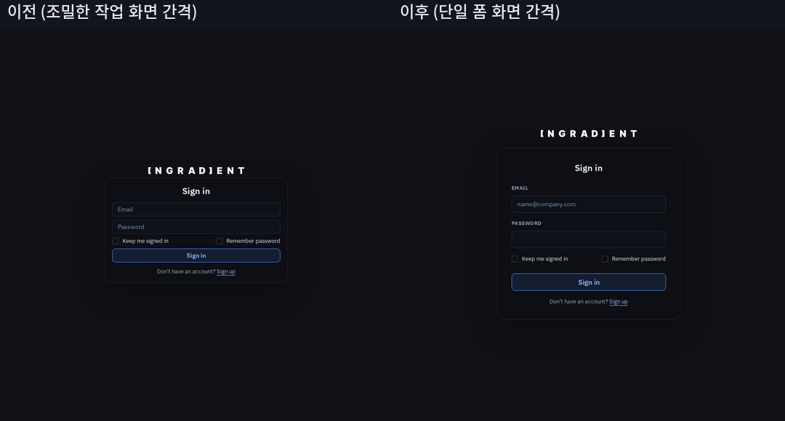
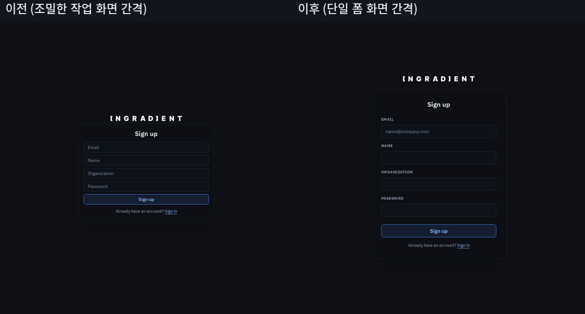
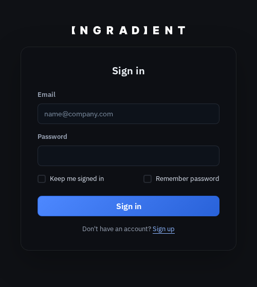
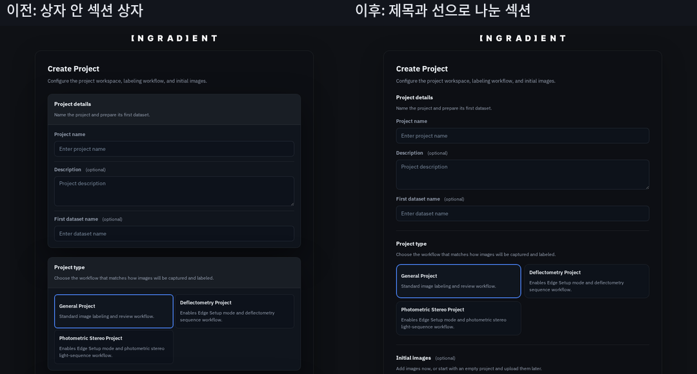
PlatformAppShell: 앱 전체 사이드바 (1e1fa48, 49d2fec)
Platform 화면이 앱 내비게이션 없이 페이지 하나씩만 보였다. 패키지에 PlatformAppShell을 추가하고 Dashboard·Catalog·Class 스토리를 그 안에 넣었다.
- 로고, 프로젝트 선택, Dashboard·Catalog·Classes, 설정·로그아웃. 1440px 이상 펼침(180px), 그 아래 접힘(72px).
- 라우터를 모른다. 앱이
activeKey와onNavigate를 넘긴다. 메뉴는 실제 주소를 가져 Cmd/Ctrl+클릭으로 새 탭이 열린다. - 프로젝트 이름은 페이지 헤더에서 사이드바의 프로젝트 선택으로 옮겼다. 페이지 높이는
var(--ig-page-height, 100vh)로 껍데기 안에서 남은 영역을 채운다. - 사이드바 화살표를 공용
PanelLeftClose/Open으로 바꿔 결정 대기였던 "SidebarShell 화살표"가 해결됐다. 앱 아이콘, 폴더·로그아웃 아이콘을 공용 자산과 아이콘 갤러리에 추가했다. - Class 목록을 접었을 때 펼치기 버튼이 앱 사이드바 경계에서 1px였던 것을 칩 줄 안쪽으로 옮겼다(21px, 공용
FilterChipRow에leading추가). - 앱 사이드바와 목록의 접기 버튼이 둘 다 "Collapse sidebar"여서 1440px에서 Class 자동 재생이 실패했다. 앱 사이드바 버튼을 "Collapse/Expand app sidebar"로 구분했다. 사이드바
aside에 이름이 없어 Catalog 댓글 패널과 랜드마크가 겹치던 접근성 위반도 고쳤다.
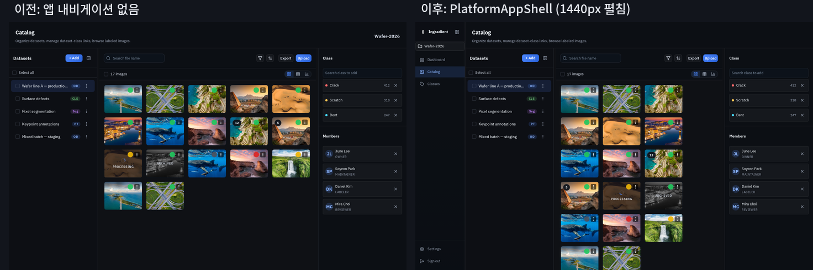
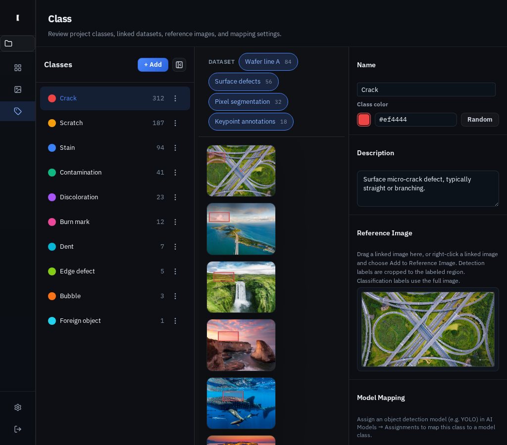
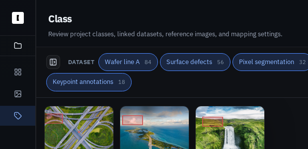
Settings 섹션을 상자 대신 제목과 선으로 (c7885f8)
처음 스크린샷으로 지적받은 화면이다. 모달 안의 섹션 상자(배경, 테두리, 모서리, 대문자 제목 띠)를 없애고 14px 제목과 1px 선(위아래 24px)으로 나눴다. 모달 본문·머리말 안쪽은 24px. 위험 섹션(계정·프로젝트 삭제)은 되돌릴 수 없는 동작의 경계라 빨간 상자로 남겼다.
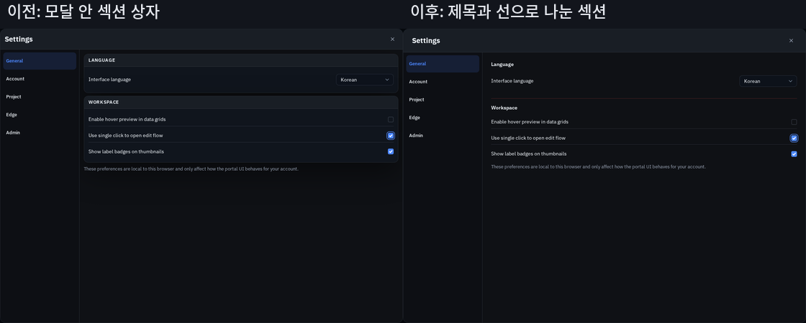
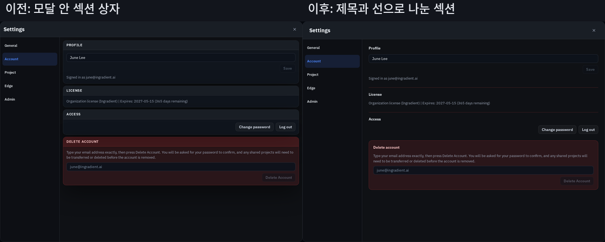
글자 역할 토큰 (8ca37dc)
DESIGN.md에 적어 둔 역할(micro, caption, body-sm, body, title-sm, title, display)이 토큰으로 없었다. --ig-text-<역할>과 짝지은 줄 높이 -leading을 만들고 Platform의 글자 크기 190곳을 같은 값의 역할로 바꿨다. 전체 스토리 비교로 화면 변화 0을 확인했다.
중복 컴포넌트와 레이아웃 크기 토큰 (b95abdc)
- 대시보드 카드 3벌을
DashboardCard하나로(분석 카드 모서리 8→12px, 깊이 규칙). 빈 문구는 공용EmptyText. - Settings Edge 탭 섹션 제목을 다른 탭과 같게. 상자를 없앤 뒤 음수 여백 때문에 제목 띠가 본문 밖으로 삐져나와 있던 것도 고쳤다(1번 작업 때 놓친 것).
- Deflectometry 미리보기 탭(직접 만든 버튼)을 공용
ChipTabs로.ChipTabs에ariaLabel을 추가했다. 이름만 겹치던 Edge 탭FieldRow는ControlRow로. - 사이드바·패널 폭, 표 열 폭, 격자 칸, 미리보기, 빈 상태, 드롭 영역, 폼 폭에 빌려 쓰던 팝업 크기 토큰을 같은 값의
--ig-layout-size-*로 옮겼다. 대화상자와 팝오버는 팝업 토큰을 그대로 쓴다.
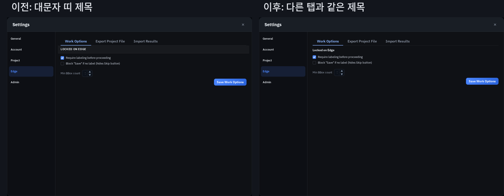
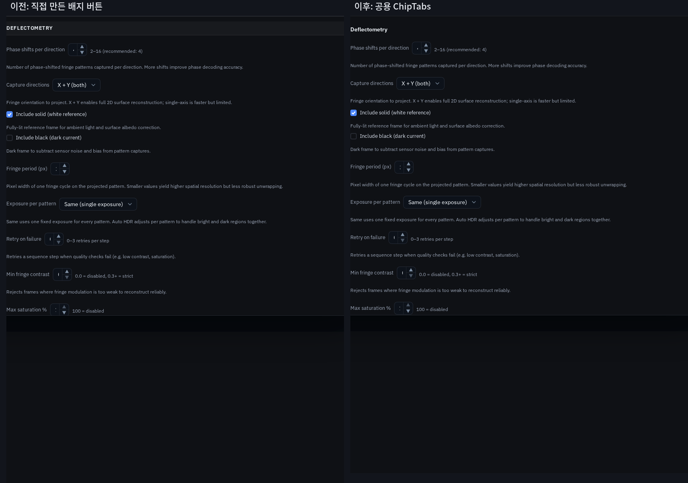
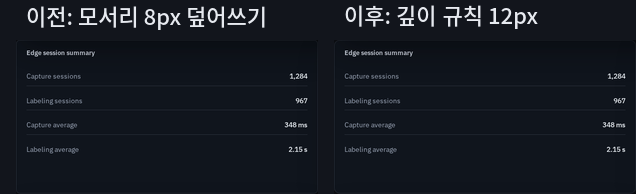
옛 간격 이름 정리 (50c427d)
이름과 값이 맞지 않던 --ig-space-*(예: space-3이 8px) 333곳을 같은 값의 --ig-spacing-{px}로 바꿨다. 0, 1px, 음수 23곳은 새 이름이 없어 그대로. 숫자 z-index 1곳은 --ig-z-base로, 위치값으로 빌려 쓰던 컨트롤 높이 1곳은 레이아웃 크기 토큰으로. 화면 변화 0.
0-4. 어제 저녁 대비 화면별 상세 비교 (17개 화면, 변경 묶음 334개)
방법: 어제 저녁(b497769, 밤사이 작업 전)과 지금(50c427d)을 각각 빌드해 같은 화면 크기(1440×900)로 찍고, 컴포넌트 이름과 글자로 같은 요소를 짝지어 모서리·안쪽 여백·간격·글자 크기·줄 높이·굵기·대문자·높이·폭·배경·테두리·그림자·안내 글자를 비교했다. 같은 변경이 여러 요소에 반복되면 하나로 묶었다(×개수). 입력칸은 순서로 짝지었다. 글자가 있는 요소의 폭 변화는 글꼴과 여백의 결과라 따로 적지 않았다. 화면마다 큰 변경 14묶음까지 번호를 붙였고, 나머지는 펼쳐 볼 수 있다. 한계: 위쪽 900px만 비교하고, 화면 구조가 크게 바뀐 곳(앱 사이드바가 생긴 화면)은 요소 짝이 일부 "사라짐/새로 생김"으로 나온다.
바로 가기: Login · Signup · Create Project · Dataset Catalog · Catalog (데이터셋 목록 접힘) · Class Management · Dashboard · Settings / General · Settings / Account · Settings / Project · Settings / Edge · Settings / Organization · Settings / Storage · Workspace / Capture · Workspace / Images · Dataset Select · Login
Platform · Login · 변경 묶음 7개 · Storybook
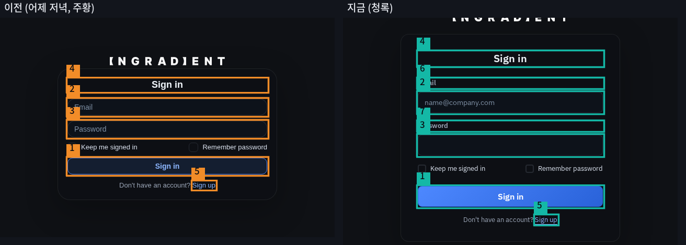
화면 전체: 실제로 그려지는 글꼴 Liberation Sans(대체 글꼴) → IBM Plex Sans / Plex Sans KR
- 1 Button: 모서리 10→8px, 글자 14→16px, 줄높이 14→16px, 안쪽여백 0/18→0/16px, 높이 32→40px, 배경 없앰, 테두리 바뀜 (예: Sign in)
- 2 input: 모서리 14→8px, 높이 32→40px, 폭 382→354px, 안내 글자 "Email"→"name@company.com" (예: Email)
- 3 input: 모서리 14→8px, 높이 32→40px, 폭 382→354px, 안내 글자 "Password"→"" (예: Password)
- 4 h1: 글자 18→20px, 줄높이 25→28px, 높이 25→28px (예: Sign in)
- 5 a: 높이 15→17px (예: Sign up)
- 6 새로 생김: label "Email"
- 7 새로 생김: label "Password"
Platform · Signup · 변경 묶음 11개 · Storybook
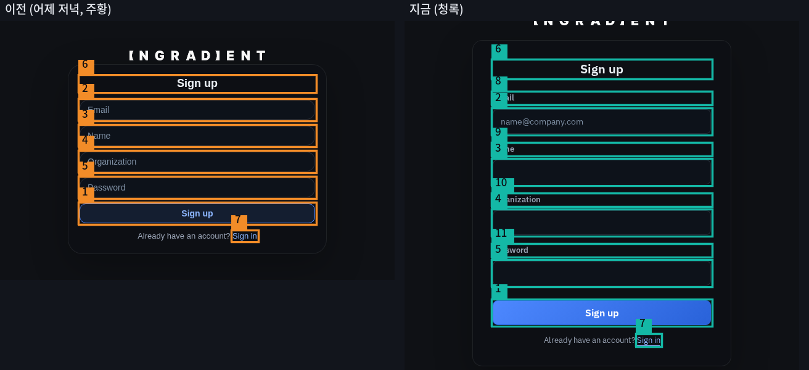
화면 전체: 실제로 그려지는 글꼴 Liberation Sans(대체 글꼴) → IBM Plex Sans / Plex Sans KR
- 1 Button: 모서리 10→8px, 글자 14→16px, 줄높이 14→16px, 안쪽여백 0/18→0/16px, 높이 32→40px, 배경 없앰, 테두리 바뀜 (예: Sign up)
- 2 input: 모서리 14→8px, 높이 32→40px, 폭 382→354px, 안내 글자 "Email"→"name@company.com" (예: Email)
- 3 input: 모서리 14→8px, 높이 32→40px, 폭 382→354px, 안내 글자 "Name"→"" (예: Name)
- 4 input: 모서리 14→8px, 높이 32→40px, 폭 382→354px, 안내 글자 "Organization"→"" (예: Organization)
- 5 input: 모서리 14→8px, 높이 32→40px, 폭 382→354px, 안내 글자 "Password"→"" (예: Password)
- 6 h1: 글자 18→20px, 줄높이 25→28px, 높이 25→28px (예: Sign up)
- 7 a: 높이 15→17px (예: Sign in)
- 8 새로 생김: label "Email"
- 9 새로 생김: label "Name"
- 10 새로 생김: label "Organization"
- 11 새로 생김: label "Password"
Platform · Create Project · 변경 묶음 8개 · Storybook
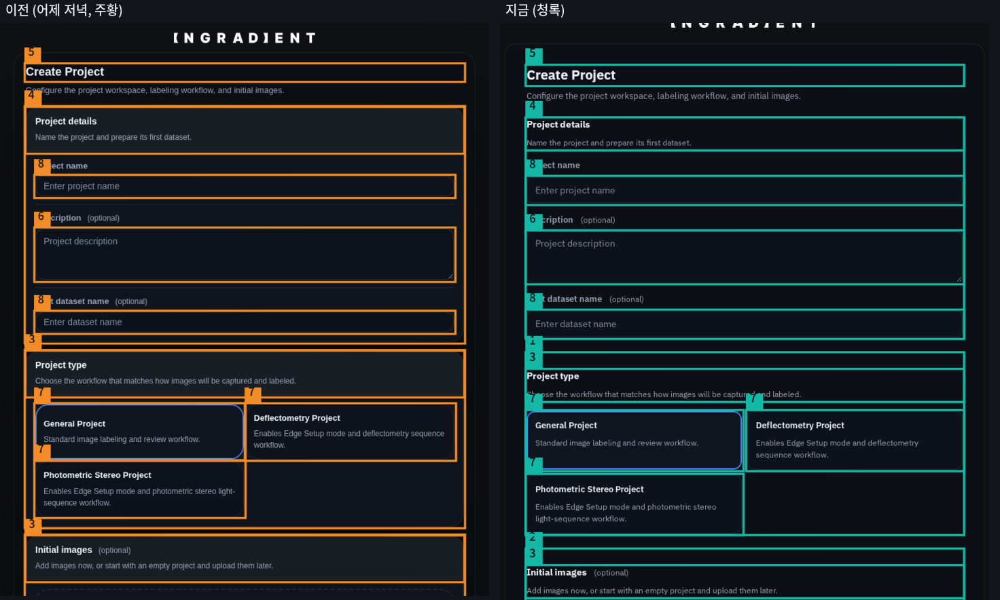
화면 전체: 실제로 그려지는 글꼴 Liberation Sans(대체 글꼴) → IBM Plex Sans / Plex Sans KR
- 1 section: 모서리 20→0px, 안쪽여백 0→24/0px, 높이 274→271px, 배경 없앰, 테두리 바뀜, 그림자 없앰
- 2 section: 모서리 20→0px, 안쪽여백 0→24/0px, 높이 182→174px, 배경 없앰, 테두리 바뀜, 그림자 없앰
- 3 header: 안쪽여백 12/14→0px, 높이 69→46px, 폭 680→654px, 배경 없앰 ×3
- 4 section: 모서리 20→0px, 높이 366→329px, 배경 없앰, 테두리 없앰, 그림자 없앰
- 5 h1: 글자 18→20px, 줄높이 25→28px, 높이 25→28px (예: Create Project)
- 6 textarea: 모서리 14→8px, 안쪽여백 10/12→8/12px, 높이 81→77px
- 7 button: 모서리 20→12px, 높이 86→88px ×3
- 8 input: 모서리 14→8px, 높이 32→40px ×2
Platform · Dataset Catalog · 변경 묶음 41개 · Storybook
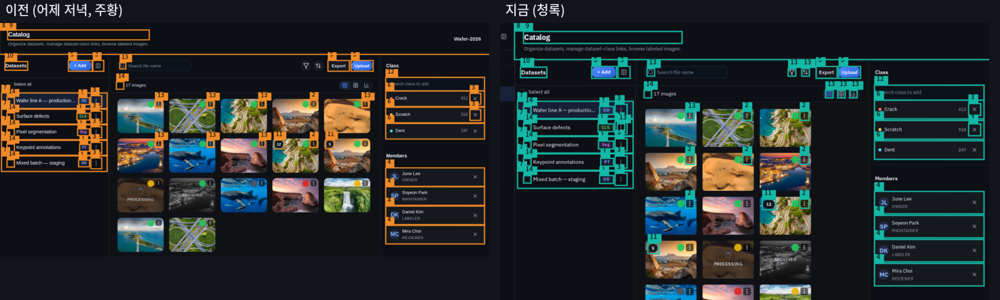
화면 전체: 실제로 그려지는 글꼴 Liberation Sans(대체 글꼴) → IBM Plex Sans / Plex Sans KR
- 1 DatasetTaskTag: 모서리 10→8px, 글자 10→11px, 줄높이 14→15px, 안쪽여백 1/6→1/8px ×5 (예: OD, CLS, Seg)
- 2 button: 모서리 6→4px, 높이 18→20px ×17 (예: Open menu for 2023, Open menu for very)
- 3 IconButton: 모서리 10→8px, 간격 8→4px ×13 (예: Collapse sidebar, Open menu for Wafe, Open menu for Surf)
- 4 li: 모서리 6→4px, 안쪽여백 6/10→8px, 높이 51→56px ×4
- 5 Button: 모서리 10→8px, 간격 8→4px, 안쪽여백 0/14→0/12px ×3 (예: + Add, Export, Upload)
- 6 li: 모서리 6→4px, 안쪽여백 6/10→8px, 높이 42→46px ×3
- 7 SelectableListItem: 모서리 10→8px, 폭 307→303px ×5
- 8 PagePrimaryHeader: 안쪽여백 22/24/18→24/16px, 높이 90→95px, 폭 1440→1259px
- 9 h1: 글자 18→20px, 줄높이 25→28px, 높이 25→28px (예: Catalog)
- 10 h2: 글자 15→16px, 줄높이 22→24px, 높이 22→24px (예: Datasets)
- 11 span: 안쪽여백 0/6→0/8px, 높이 22→24px ×2 (예: 12, 5)
- 12 input: 모서리 10→8px, 안쪽여백 8/10→8px
- 13 svg: 아이콘 크기 14×14→16×16px ×17
- 14 Checkbox: 높이 18→16px ×6
번호 없는 나머지 27건 펼치기
- button: 모서리 10→8px ×2
- svg: 아이콘 크기 12×12→16×16px ×5
- DatasetListItem: 폭 275→271px ×5
- svg: 아이콘 크기 18×18→16×16px ×4
- input: 모서리 14→8px
- svg: 아이콘 크기 18×18→12×12px ×3
- button: 간격 6→8px ×3
- CatalogView: 폭 1440→1259px
- DatasetListPanel: 높이 810→805px
- svg: 아이콘 크기 16×16→12×12px
- GalleryToolbar: 폭 784→603px
- svg: 아이콘 크기 14×14→12×12px
- aside: 높이 810→805px
- section: 높이 266→283px
- section: 높이 309→336px
- 새로 생김: a ×3
- 새로 생김: button ×2
- 새로 생김: PlatformAppShell
- 새로 생김: aside "App sidebar"
- 새로 생김: img
- 새로 생김: button "Collapse app sidebar"
- 새로 생김: button "Project: Wafer-2026"
- 새로 생김: nav "Main"
- 새로 생김: h2 "Class"
- 새로 생김: h2 "Members"
- 사라짐: h3 "Class"
- 사라짐: h3 "Members"
Platform · Catalog (데이터셋 목록 접힘) · 변경 묶음 38개 · Storybook
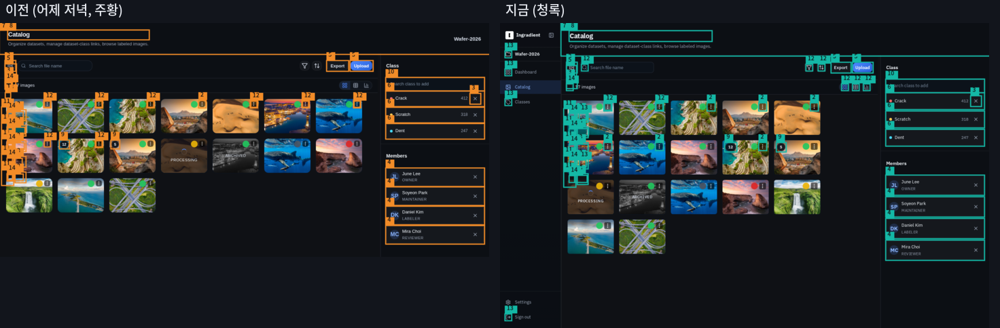
화면 전체: 실제로 그려지는 글꼴 Liberation Sans(대체 글꼴) → IBM Plex Sans / Plex Sans KR
- 1 DatasetTaskTag: 모서리 10→8px, 글자 10→11px, 줄높이 14→15px, 안쪽여백 1/6→1/8px ×5 (예: OD, CLS, Seg)
- 2 button: 모서리 6→4px, 높이 18→20px ×17 (예: Open menu for 2023, Open menu for very)
- 3 IconButton: 모서리 10→8px, 간격 8→4px ×14 (예: Collapse sidebar, Open menu for Wafe, Open menu for Surf)
- 4 li: 모서리 6→4px, 안쪽여백 6/10→8px, 높이 51→56px ×4
- 5 Button: 모서리 10→8px, 간격 8→4px, 안쪽여백 0/14→0/12px ×3 (예: + Add, Export, Upload)
- 6 li: 모서리 6→4px, 안쪽여백 6/10→8px, 높이 42→46px ×3
- 7 PagePrimaryHeader: 안쪽여백 22/24/18→24/16px, 높이 90→95px, 폭 1440→1259px
- 8 h1: 글자 18→20px, 줄높이 25→28px, 높이 25→28px (예: Catalog)
- 9 span: 안쪽여백 0/6→0/8px, 높이 22→24px ×2 (예: 12, 5)
- 10 input: 모서리 10→8px, 안쪽여백 8/10→8px
- 11 SelectableListItem: 모서리 10→8px ×5
- 12 svg: 아이콘 크기 14×14→16×16px ×16
- 13 svg: 아이콘 크기 12×12→16×16px ×6
- 14 Checkbox: 높이 18→16px ×6
번호 없는 나머지 24건 펼치기
- button: 모서리 10→8px ×2
- svg: 아이콘 크기 18×18→16×16px ×4
- input: 모서리 14→8px
- svg: 아이콘 크기 18×18→12×12px ×3
- button: 간격 6→8px ×3
- svg: 아이콘 크기 14×14→12×12px ×2
- CatalogView: 폭 1440→1259px
- svg: 아이콘 크기 16×16→12×12px
- GalleryToolbar: 폭 1112→931px
- aside: 높이 810→805px
- section: 높이 266→283px
- section: 높이 309→336px
- 새로 생김: a ×3
- 새로 생김: button ×2
- 새로 생김: PlatformAppShell
- 새로 생김: aside "App sidebar"
- 새로 생김: img
- 새로 생김: button "Collapse app sidebar"
- 새로 생김: button "Project: Wafer-2026"
- 새로 생김: nav "Main"
- 새로 생김: h2 "Class"
- 새로 생김: h2 "Members"
- 사라짐: h3 "Class"
- 사라짐: h3 "Members"
Platform · Class Management · 변경 묶음 28개 · Storybook
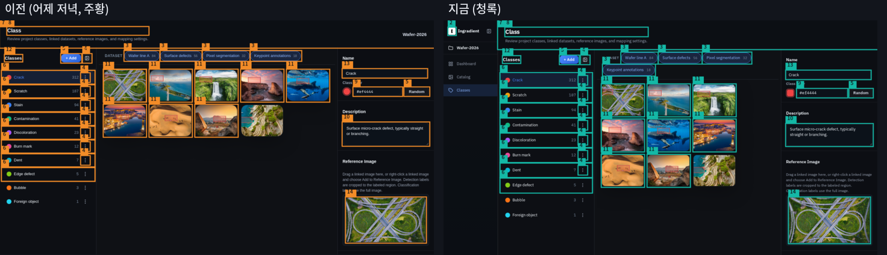
화면 전체: 실제로 그려지는 글꼴 Liberation Sans(대체 글꼴) → IBM Plex Sans / Plex Sans KR
- 1 SelectableListItem: 모서리 10→8px, 높이 44→48px, 폭 307→303px ×10
- 2 img: 글자 16→14px, 줄높이 22→20px, 굵기 400→700, 높이 104→24px, 폭 138→24px
- 3 button: 간격 6→8px, 안쪽여백 6/12→8/12px, 높이 32→36px ×4 (예: Wafer line A, Surface defects, Pixel segmentation)
- 4 IconButton: 모서리 10→8px, 간격 8→4px ×11 (예: Collapse sidebar, Open menu for Crac, Open menu for Scra)
- 5 Button: 모서리 10→8px, 간격 8→4px, 안쪽여백 0/14→0/12px ×2 (예: + Add, Random)
- 6 li: 높이 44→48px, 폭 307→303px ×10
- 7 PagePrimaryHeader: 안쪽여백 22/24/18→24/16px, 높이 90→95px, 폭 1440→1259px
- 8 h1: 글자 18→20px, 줄높이 25→28px, 높이 25→28px (예: Class)
- 9 input: 모서리 14→8px, 안쪽여백 0/10→0/8px, 폭 161→166px
- 10 textarea: 모서리 14→8px, 안쪽여백 10/12→8/12px, 높이 77→73px
- 11 div: 모서리 20→12px ×9 (예: Grid item)
- 12 h2: 글자 15→16px, 줄높이 21→22px (예: Classes)
- 13 input: 모서리 6→4px, 안쪽여백 0/10→0/8px
- 14 img: 모서리 10→4px, 높이 150→152px (예: Reference image)
번호 없는 나머지 14건 펼치기
- svg: 아이콘 크기 18×18→16×16px ×10
- svg: 아이콘 크기 138×104→16×16px ×7
- button: 모서리 14→8px
- aside: 높이 810→805px ×2
- section: 높이 166→162px
- section: 높이 140→136px
- 새로 생김: a ×3
- 새로 생김: button ×2
- 새로 생김: PlatformAppShell
- 새로 생김: aside "App sidebar"
- 새로 생김: button "Collapse app sidebar"
- 새로 생김: button "Project: Wafer-2026"
- 새로 생김: nav "Main"
- 새로 생김: img
Platform · Dashboard · 변경 묶음 19개 · Storybook
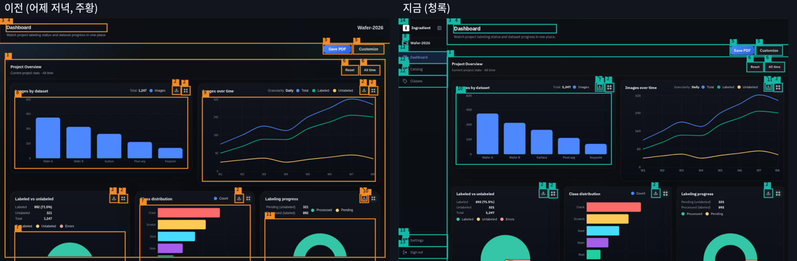
화면 전체: 실제로 그려지는 글꼴 Liberation Sans(대체 글꼴) → IBM Plex Sans / Plex Sans KR
- 1 section: 모서리 24→0px, 높이 730→756px, 배경 없앰, 테두리 없앰, 그림자 없앰
- 2 IconButton: 모서리 10→8px, 간격 8→4px ×10 (예: Download widget im, Drag Images by dat, Drag Images over t)
- 3 header: 안쪽여백 22/24/18→24/16px, 높이 90→95px, 폭 1440→1259px
- 4 h1: 글자 18→20px, 줄높이 25→28px, 높이 25→28px (예: Dashboard)
- 5 Button: 모서리 10→8px, 안쪽여백 0/18→0/12px ×2 (예: Save PDF, Customize)
- 6 Button: 모서리 10→8px ×2 (예: Reset, All time)
- 7 svg: 아이콘 크기 404×260→16×16px ×2
- 8 svg: 아이콘 크기 635×260→16×16px
- 9 svg: 아이콘 크기 635×308→16×16px
- 10 svg: 아이콘 크기 16×16→570×260px
- 11 svg: 아이콘 크기 404×304→16×16px
- 12 새로 생김: a ×3
- 13 새로 생김: button ×2
- 14 새로 생김: PlatformAppShell
번호 없는 나머지 5건 펼치기
- 새로 생김: aside "App sidebar"
- 새로 생김: img
- 새로 생김: button "Collapse app sidebar"
- 새로 생김: button "Project: Wafer-2026"
- 새로 생김: nav "Main"
Platform · Settings / General · 변경 묶음 10개 · Storybook
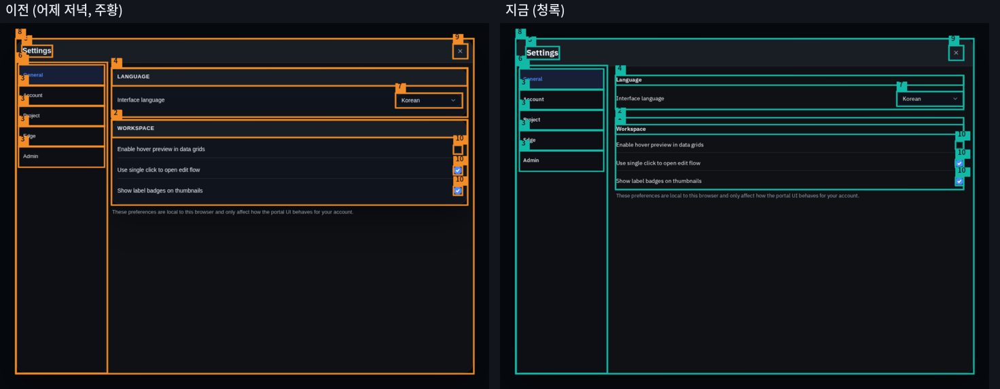
화면 전체: 실제로 그려지는 글꼴 Liberation Sans(대체 글꼴) → IBM Plex Sans / Plex Sans KR
- 1 h3: 글자 13→14px, 줄높이 18→20px, 안쪽여백 10/12→0px, 대문자 켬→끔, 높이 39→20px, 배경 없앰 ×4 (예: Language, Workspace)
- 2 section: 모서리 20→0px, 안쪽여백 0→16/0px, 높이 206→173px, 배경 없앰, 테두리 바뀜, 그림자 없앰 ×2
- 3 button: 모서리 10→8px, 안쪽여백 8/10→8px, 폭 207→203px ×10
- 4 section: 모서리 20→0px, 높이 117→80px, 배경 없앰, 테두리 없앰, 그림자 없앰 ×2
- 5 h2: 글자 18→20px, 줄높이 25→28px, 높이 25→28px ×2 (예: Settings)
- 6 div: 안쪽여백 6→8px, 높이 761→753px ×2
- 7 button: 모서리 14→8px, 안쪽여백 0/14/12→0/12px ×2
- 8 div: 모서리 24→16px ×2
- 9 IconButton: 모서리 10→8px ×2 (예: Close dialog)
- 10 Checkbox: 높이 18→16px ×6
Platform · Settings / Account · 변경 묶음 13개 · Storybook
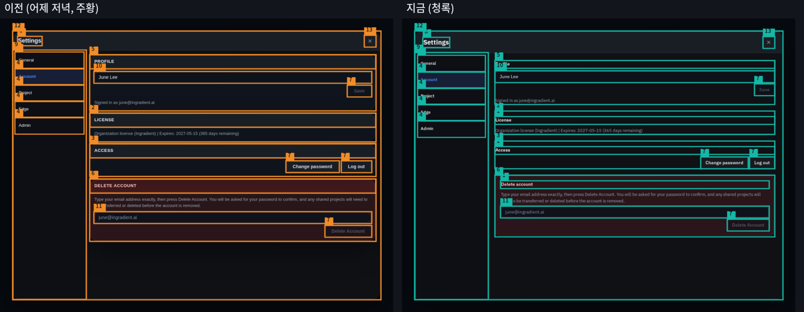
화면 전체: 실제로 그려지는 글꼴 Liberation Sans(대체 글꼴) → IBM Plex Sans / Plex Sans KR
- 1 h3: 글자 13→14px, 줄높이 18→20px, 안쪽여백 10/12→0px, 대문자 켬→끔, 높이 39→20px, 배경 없앰 ×8 (예: Profile, License, Access)
- 2 section: 모서리 20→0px, 안쪽여백 0→16/0px, 높이 85→68px, 배경 없앰, 테두리 바뀜, 그림자 없앰 ×2
- 3 section: 모서리 20→0px, 안쪽여백 0→16/0px, 높이 97→81px, 배경 없앰, 테두리 바뀜, 그림자 없앰 ×2
- 4 button: 모서리 10→8px, 안쪽여백 8/10→8px, 폭 207→203px ×10
- 5 section: 모서리 20→0px, 높이 169→131px, 배경 없앰, 테두리 없앰, 그림자 없앰 ×2
- 6 section: 모서리 20→12px, 안쪽여백 0→16px, 높이 188→185px, 그림자 없앰 ×2
- 7 Button: 모서리 10→8px, 안쪽여백 0/18→0/12px ×8 (예: Save, Change password, Log out)
- 8 h2: 글자 18→20px, 줄높이 25→28px, 높이 25→28px ×2 (예: Settings)
- 9 div: 안쪽여백 6→8px, 높이 761→753px ×2
- 10 input: 모서리 14→8px, 폭 844→850px ×2
- 11 input: 모서리 14→8px, 폭 844→816px ×2
- 12 div: 모서리 24→16px ×2
- 13 IconButton: 모서리 10→8px ×2 (예: Close dialog)
Platform · Settings / Project · 변경 묶음 39개 · Storybook
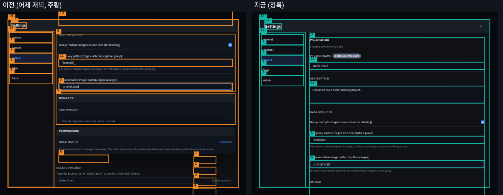
화면 전체: 실제로 그려지는 글꼴 Liberation Sans(대체 글꼴) → IBM Plex Sans / Plex Sans KR
- 1 button: 모서리 14→8px, 글자 14→13px, 줄높이 14→18px, 간격 12→8px, 안쪽여백 0/14/12→8px, 굵기 400→500, 높이 32→48px, 폭 104→203px, 배경 없앰, 테두리 없앰
- 2 button: 모서리 14→8px, 글자 14→13px, 줄높이 14→18px, 간격 12→8px, 안쪽여백 0/14/12→8px, 굵기 400→500, 높이 32→48px, 폭 105→203px, 배경 없앰, 테두리 없앰
- 3 button: 모서리 14→8px, 글자 14→13px, 줄높이 14→18px, 간격 12→8px, 안쪽여백 0/14/12→8px, 굵기 400→600, 높이 32→48px, 폭 104→203px, 배경색 바뀜, 테두리 없앰
- 4 button: 모서리 14→8px, 글자 14→13px, 줄높이 14→18px, 간격 12→8px, 안쪽여백 0/14/12→8px, 굵기 400→500, 높이 32→48px, 폭 108→203px, 배경 없앰, 테두리 없앰
- 5 input: 모서리 14→8px, 폭 844→850px, 배경색 바뀜, 그림자 없앰, 안내 글자 "e.g. _x_orig\.png$"→"e.g. ^([^_]+_[^_]+)_" ×2 (예: e.g. _x_orig\.png$)
- 6 input: 모서리 14→8px, 폭 240→850px, 배경색 바뀜, 그림자 생김, 안내 글자 "Search role…"→"e.g. _x_orig\.png$" ×2 (예: Search role…)
- 7 button: 모서리 10→8px, 안쪽여백 8/10→8px, 폭 207→203px ×6
- 8 section: 모서리 20→0px, 높이 279→1041px, 배경 없앰, 테두리 없앰, 그림자 없앰
- 9 section: 모서리 20→0px, 높이 147→1041px, 배경 없앰, 테두리 없앰, 그림자 없앰
- 10 h2: 글자 18→20px, 줄높이 25→28px, 높이 25→28px ×2 (예: Settings)
- 11 input: 모서리 14→8px, 폭 844→850px, 안내 글자 "e.g. ^([^_]+_[^_]+)_"→"Project name" ×2 (예: e.g. ^([^_]+_[^_]+)_)
- 12 div: 안쪽여백 6→8px, 높이 761→753px ×2
- 13 textarea: 모서리 14→8px, 폭 844→850px ×2
- 14 div: 모서리 24→16px ×2
번호 없는 나머지 25건 펼치기
- IconButton: 모서리 10→8px ×2
- h4: 줄높이 19→20px ×4
- Checkbox: 높이 18→16px ×4
- 사라짐: Button "Remove" ×8
- 사라짐: button ×8
- 사라짐: input ×4
- 사라짐: section ×4
- svg: 아이콘 크기 12×12→16×16px
- 새로 생김: h3 "Project details" ×2
- 새로 생김: h4 "Project name" ×2
- 새로 생김: h4 "Description" ×2
- 사라짐: h4 "Display" ×2
- 사라짐: label "Show file name below each th" ×2
- 사라짐: label "Show class name on bbox in I" ×2
- 사라짐: h4 "Group visibility (owner only" ×2
- 사라짐: label "Only owner can see all image" ×2
- 사라짐: h3 "Members" ×2
- 사라짐: h4 "Add member" ×2
- 사라짐: EmptyState "Type at least 3 characters t" ×2
- 사라짐: h4 "Current members" ×2
- 사라짐: h3 "Permissions" ×2
- 사라짐: h4 "Role matrix" ×2
- 사라짐: button "Expand All" ×2
- 사라짐: h4 "Delete project" ×2
- 사라짐: Button "Delete project" ×2
Platform · Settings / Edge · 변경 묶음 12개 · Storybook
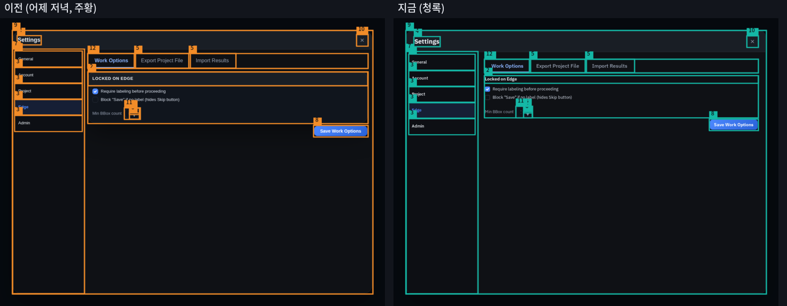
화면 전체: 실제로 그려지는 글꼴 Liberation Sans(대체 글꼴) → IBM Plex Sans / Plex Sans KR
- 1 section: 모서리 20→0px, 간격 10→12px, 안쪽여백 12→0px, 높이 158→128px, 배경 없앰, 테두리 없앰, 그림자 없앰 ×2
- 2 h3: 글자 13→14px, 줄높이 18→20px, 안쪽여백 10/12→0px, 대문자 켬→끔, 높이 39→20px, 배경 없앰 ×2 (예: Locked on Edge)
- 3 button: 모서리 10→8px, 안쪽여백 8/10→8px, 폭 207→203px ×10
- 4 h2: 글자 18→20px, 줄높이 25→28px, 높이 25→28px ×2 (예: Settings)
- 5 button: 안쪽여백 10/20→8/20px, 높이 42→38px ×6 (예: Work Options, Export Project Fil, Import Results)
- 6 button: 글자 10→11px, 줄높이 10→11px ×4 (예: ▲, ▼)
- 7 div: 안쪽여백 6→8px, 높이 761→753px ×2
- 8 Button: 모서리 10→8px, 안쪽여백 0/18→0/12px ×2 (예: Save Work Options)
- 9 div: 모서리 24→16px ×2
- 10 IconButton: 모서리 10→8px ×2 (예: Close dialog)
- 11 input: 모서리 14→8px ×2
- 12 div: 높이 43→39px ×2
Platform · Settings / Organization · 변경 묶음 12개 · Storybook
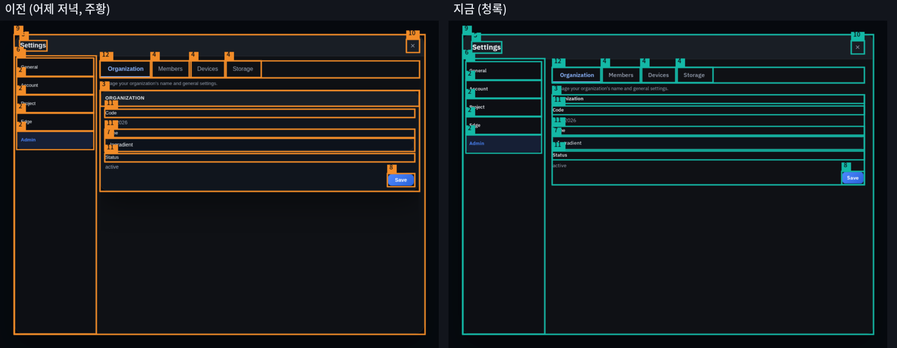
화면 전체: 실제로 그려지는 글꼴 Liberation Sans(대체 글꼴) → IBM Plex Sans / Plex Sans KR
- 1 h3: 글자 13→14px, 줄높이 18→20px, 안쪽여백 10/12→0px, 대문자 켬→끔, 높이 39→20px, 배경 없앰 ×2 (예: Organization)
- 2 button: 모서리 10→8px, 안쪽여백 8/10→8px, 폭 207→203px ×10
- 3 section: 모서리 20→0px, 높이 274→244px, 배경 없앰, 테두리 없앰, 그림자 없앰 ×2
- 4 button: 안쪽여백 10/20→8/20px, 높이 42→38px ×8 (예: Organization, Members, Devices)
- 5 h2: 글자 18→20px, 줄높이 25→28px, 높이 25→28px ×2 (예: Settings)
- 6 div: 안쪽여백 6→8px, 높이 761→753px ×2
- 7 input: 모서리 14→8px, 폭 844→850px ×2
- 8 Button: 모서리 10→8px, 안쪽여백 0/18→0/12px ×2 (예: Save)
- 9 div: 모서리 24→16px ×2
- 10 IconButton: 모서리 10→8px ×2 (예: Close dialog)
- 11 label: 줄높이 19→20px ×6 (예: Code, Name, Status)
- 12 div: 높이 43→39px ×2
Platform · Settings / Storage · 변경 묶음 13개 · Storybook
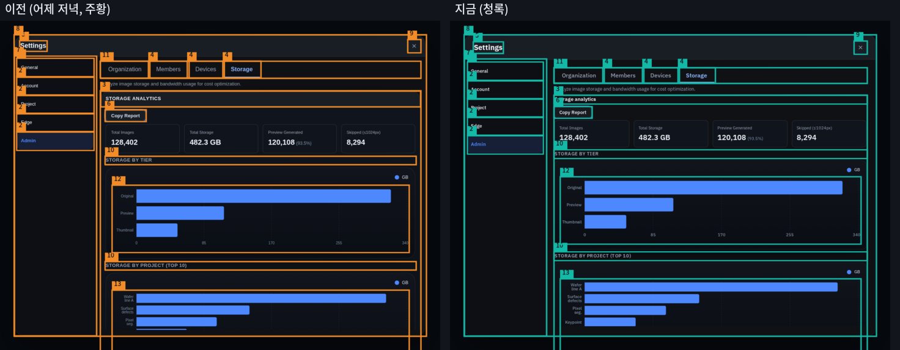
화면 전체: 실제로 그려지는 글꼴 Liberation Sans(대체 글꼴) → IBM Plex Sans / Plex Sans KR
- 1 h3: 글자 13→14px, 줄높이 18→20px, 안쪽여백 10/12→0px, 대문자 켬→끔, 높이 39→20px, 배경 없앰 ×2 (예: Storage analytics)
- 2 button: 모서리 10→8px, 안쪽여백 8/10→8px, 폭 207→203px ×10
- 3 section: 모서리 20→0px, 높이 1916→1840px, 배경 없앰, 테두리 없앰, 그림자 없앰 ×2
- 4 button: 안쪽여백 10/20→8/20px, 높이 42→38px ×8 (예: Organization, Members, Devices)
- 5 h2: 글자 18→20px, 줄높이 25→28px, 높이 25→28px ×2 (예: Settings)
- 6 Button: 모서리 10→8px, 간격 8→4px, 안쪽여백 0/14→0/12px ×2 (예: Copy Report)
- 7 div: 안쪽여백 6→8px, 높이 761→753px ×2
- 8 div: 모서리 24→16px ×2
- 9 IconButton: 모서리 10→8px ×2 (예: Close dialog)
- 10 h4: 줄높이 19→20px ×4 (예: Storage by Tier, Storage by Project)
- 11 div: 높이 43→39px ×2
- 12 svg: 아이콘 크기 806×180→816×180px ×2
- 13 svg: 아이콘 크기 806×200→816×200px ×2
Edge · Workspace / Capture · 변경 묶음 26개 · Storybook
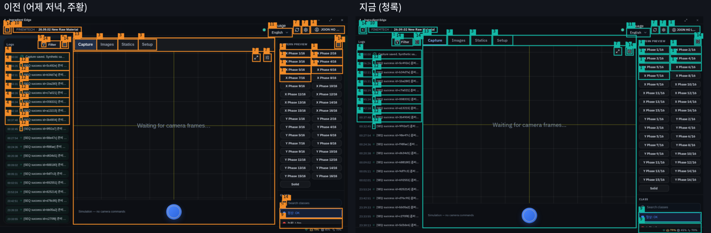
화면 전체: 실제로 그려지는 글꼴 Liberation Sans(대체 글꼴) → IBM Plex Sans / Plex Sans KR
- 1 Button: 모서리 10→8px, 간격 8→4px, 안쪽여백 0/14→0/12px ×35 (예: Account: JOON HO L, X Phase 1/16, X Phase 2/16)
- 2 div: 모서리 20→0px, 간격 4→0px, 안쪽여백 4→0px, 높이 52→39px, 배경 없앰, 테두리 없앰
- 3 button: 모서리 10→0px, 안쪽여백 10/14→8/20px, 굵기 600→500, 높이 42→38px ×3 (예: Images, Statics, Setup)
- 4 div: 모서리 10→8px, 배경 없앰 ×21
- 5 Button: 모서리 10→8px, 간격 8→4px, 안쪽여백 0/14→0/12px, 폭 88→83px
- 6 IconButton: 모서리 10→8px, 간격 8→4px, 높이 28→24px ×2 (예: Collapse panel (st, Collapse panel (cl)
- 7 IconButton: 모서리 10→8px, 간격 8→4px ×5 (예: Action, Settings, Enter fullscreen)
- 8 button: 모서리 10→0px, 안쪽여백 10/14→8/20px, 높이 42→38px (예: Capture)
- 9 SelectableListItem: 모서리 10→8px, 안쪽여백 8/10→8px ×2 (예: 정상: OK, 눌림: Lõm)
- 10 h1: 간격 6→8px, 안쪽여백 0/10→0/8px
- 11 button: 모서리 14→8px, 안쪽여백 0/14/12→0/12px (예: Language)
- 12 svg: 아이콘 크기 6×14→7×16px ×19
- 13 WorkspaceShell: 높이 770→796px, 폭 830→880px
- 14 svg: 아이콘 크기 14×14→16×16px ×5
번호 없는 나머지 12건 펼치기
- svg: 아이콘 크기 13×13→12×12px ×4
- svg: 아이콘 크기 18×18→16×16px ×4
- input: 모서리 14→8px
- img: 높이 18→16px
- svg: 아이콘 크기 11×11→12×12px
- label: 높이 17→20px
- svg: 아이콘 크기 14×14→15×16px
- svg: 아이콘 크기 18×18→7×16px
- button: 테두리 바뀜
- aside: 높이 770→796px
- svg: 아이콘 크기 13×13→16×16px
- 사라짐: SelectableListItem "돌출: Lỗi"
Edge · Workspace / Images · 변경 묶음 33개 · Storybook
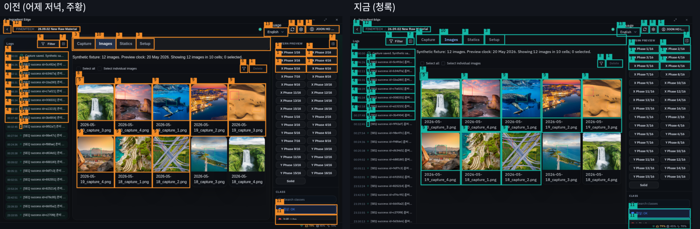
화면 전체: 실제로 그려지는 글꼴 Liberation Sans(대체 글꼴) → IBM Plex Sans / Plex Sans KR
- 1 Button: 모서리 10→8px, 간격 8→4px, 안쪽여백 0/14→0/12px ×36 (예: Account: JOON HO L, Delete, X Phase 1/16)
- 2 div: 모서리 20→0px, 간격 4→0px, 안쪽여백 4→0px, 높이 52→39px, 배경 없앰, 테두리 없앰
- 3 button: 모서리 10→0px, 안쪽여백 10/14→8/20px, 굵기 600→500, 높이 42→38px ×3 (예: Capture, Statics, Setup)
- 4 div: 모서리 10→8px, 배경 없앰 ×21
- 5 div: 모서리 20→12px, 높이 218→222px ×10 (예: Grid item)
- 6 Button: 모서리 10→8px, 간격 8→4px, 안쪽여백 0/14→0/12px, 폭 88→83px
- 7 IconButton: 모서리 10→8px, 간격 8→4px, 높이 28→24px ×2 (예: Collapse panel (st, Collapse panel (cl)
- 8 IconButton: 모서리 10→8px, 간격 8→4px ×5 (예: Action, Settings, Filter)
- 9 img: 높이 151→160px, 폭 151→160px ×10
- 10 button: 모서리 10→0px, 안쪽여백 10/14→8/20px, 높이 42→38px (예: Images)
- 11 SelectableListItem: 모서리 10→8px, 안쪽여백 8/10→8px ×2 (예: 정상: OK, 눌림: Lõm)
- 12 h1: 간격 6→8px, 안쪽여백 0/10→0/8px
- 13 button: 모서리 14→8px, 안쪽여백 0/14/12→0/12px (예: Language)
- 14 svg: 아이콘 크기 6×14→7×16px ×19
번호 없는 나머지 19건 펼치기
- WorkspaceShell: 높이 770→796px, 폭 830→880px
- svg: 아이콘 크기 151×151→12×12px ×6
- svg: 아이콘 크기 12×12→160×160px ×6
- svg: 아이콘 크기 14×14→16×16px ×5
- svg: 아이콘 크기 13×13→12×12px ×4
- span: 안쪽여백 4/10→4/8px
- input: 모서리 14→8px
- svg: 아이콘 크기 18×18→16×16px ×3
- img: 높이 18→16px
- svg: 아이콘 크기 11×11→12×12px
- label: 높이 17→20px
- svg: 아이콘 크기 14×14→15×16px
- svg: 아이콘 크기 12×12→7×16px
- svg: 아이콘 크기 16×16→12×12px
- svg: 아이콘 크기 12×12→16×16px
- svg: 아이콘 크기 14×14→12×12px
- aside: 높이 770→796px
- svg: 아이콘 크기 13×13→16×16px
- 사라짐: SelectableListItem "돌출: Lỗi"
Edge · Dataset Select · 변경 묶음 13개 · Storybook
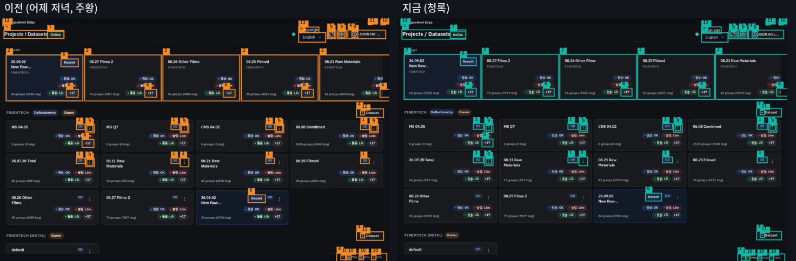
화면 전체: 실제로 그려지는 글꼴 Liberation Sans(대체 글꼴) → IBM Plex Sans / Plex Sans KR
- 1 span: 모서리 10→8px, 글자 10→11px, 줄높이 14→15px, 안쪽여백 1/6→1/8px ×12 (예: OD)
- 2 button: 모서리 10→8px, 안쪽여백 14/16→12/16px, 높이 167→163px ×5
- 3 IconButton: 모서리 10→8px, 간격 8→4px ×14 (예: Refresh, Settings, More options)
- 4 Button: 모서리 10→8px, 간격 8→4px, 안쪽여백 0/14→0/12px ×4 (예: Account: JOON HO L, Dataset, Open system monito)
- 5 h1: 글자 18→20px, 줄높이 26→28px, 높이 26→31px (예: Projects / Dataset)
- 6 span: 안쪽여백 4/10→4/8px ×22 (예: Recent, + 17, Deflectometry)
- 7 span: 줄높이 17→28px, 안쪽여백 4/10→4/8px (예: Online)
- 8 button: 모서리 14→8px, 안쪽여백 0/14/12→0/12px (예: Language)
- 9 svg: 아이콘 크기 18×18→16×16px ×15
- 10 svg: 아이콘 크기 13×13→12×12px ×5
- 11 svg: 아이콘 크기 11×11→12×12px ×3
- 12 img: 높이 18→16px (예: Ingradient)
- 13 label: 높이 17→20px (예: Language)
Edge · Login · 변경 묶음 11개 · Storybook
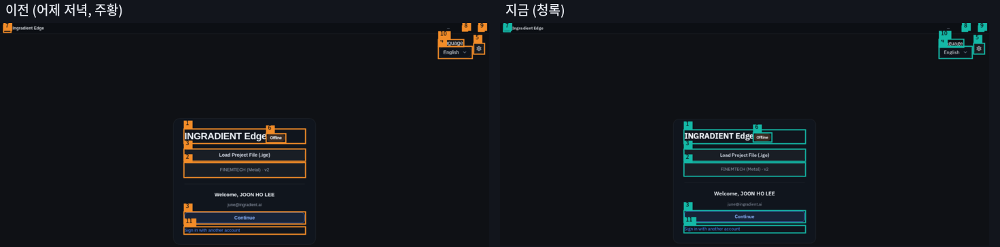
화면 전체: 실제로 그려지는 글꼴 Liberation Sans(대체 글꼴) → IBM Plex Sans / Plex Sans KR
- 1 h1: 글자 28→24px, 줄높이 39→32px, 높이 39→37px (예: INGRADIENT Edge)
- 2 div: 모서리 10→8px, 안쪽여백 10→8px, 높이 40→36px (예: FINEMTECH (Metal) )
- 3 Button: 모서리 10→8px, 안쪽여백 0/18→0/12px ×2 (예: Load Project File , Continue)
- 4 button: 모서리 14→8px, 안쪽여백 0/14/12→0/12px (예: Language)
- 5 IconButton: 모서리 10→8px, 간격 8→4px (예: Action)
- 6 span: 줄높이 17→32px, 안쪽여백 4/10→4/8px (예: Offline)
- 7 img: 높이 18→16px (예: Ingradient)
- 8 svg: 아이콘 크기 11×11→12×12px
- 9 svg: 아이콘 크기 13×13→12×12px
- 10 label: 높이 17→20px (예: Language)
- 11 button: 간격 6→8px (예: Sign in with anoth)
0-5. 새로 발견한 문제
| 문제 | 위치 | 원인 | 상태 |
|---|---|---|---|
| 숫자 입력칸 값이 잘려 숫자가 보이지 않음 | Settings Edge 탭 Deflectometry(Phase shifts, Fringe period, Retry 등) | NumberField 폭이 46~48px인데 안쪽 여백이 왼쪽 12px, 오른쪽 32px(위아래 버튼 자리)라 숫자 들어갈 자리가 0~2px | 어제 저녁에도 있던 문제(이번 변경이 만든 것 아님). 제안: NumberField에 최소 폭(예: 여백 + 숫자 4자리)을 두거나, Edge 탭이 폭을 지정 |
| Edge 탭 제목 띠가 본문 밖으로 삐져나옴 | Settings Edge 탭 | Settings 섹션 상자를 없앨 때 Edge 탭 제목의 음수 여백을 놓침 | b95abdc에서 고침 |
| Catalog 오른쪽 패널 제목 순서(접근성) | Catalog 데이터셋 목록 접힘 | 접힌 열을 inert로 만들면서 h2가 빠짐 | 밤사이 e725981에서 고침 |
0. 최종 결과 (밤사이 6단계 완료)
합의한 순서(표면 깊이 → 기초 값 → DESIGN.md → 공용 컴포넌트 → Platform → Edge)를 끝까지 진행했다. 브랜치 feat/surface-depth, push·PR 없음. 아래 1~7절은 밤사이 앞부분에 쓴 제안 기록이고, 이 절이 최종 상태다.
Simon이 확인할 것
- 4px 값이 적용된 화면(0-2): 버튼 좌우 여백이 18→12px로 좁아지고, 모서리가 24→16·20→12px로, 체크박스가 18→16px로 바뀌었다.
- 줄 높이 px(D11):
Text·Heading에서만 글자 크기와 짝지은 px(16·20·24·28·32)를 쓴다.body와 개별 컴포넌트의 배수 줄 높이 49곳은 그대로다(body를 px로 바꾸면 큰 제목이 작은 줄 높이를 물려받아 겹친다). - 폰트(0-3): IBM Plex Sans·Sans KR이 실제로 적용됐다. 이전에는 이 PC에서 영문 Liberation Sans, 한글은 일본어용 Noto Sans CJK JP로 그려졌다. Mac에서도 같은 폰트로 보이는지 확인해 주세요.
- Edge 구성(0-4): 카드 → Platform과 같은 선으로 나눈 구성, 밑줄 탭, 로그 줄 배경 제거(오류만 강조).
- 시각 기준선: 거의 모든 화면이 바뀌어 visual 테스트는 CI(ubuntu) 캡처로 새 기준선을 받고 승인해야 한다. 로컬에서 갱신하지 않았다. push·PR이 필요하다.
- 원인을 다 못 본 것: 위치 기준 위계 검사에서 Settings Storage 로딩(같음 3), Settings Edge 가져오기 업로드(같음 1), Edge 시스템 정리(같음 1)는 원인을 확인하지 않았다. 나머지 남은 쌍은 팝오버·메뉴·확인창이 겹쳐 보이는 경우다.
- 브랜치 나누기:
refactor/space-props-and-removable-list→fix/broken-controls→feat/surface-depth가 순서대로 쌓여 있다. PR을 어떻게 나눌지 정해 주세요.
0-1. 커밋과 검증
| 시각 | 커밋 | 내용 |
|---|---|---|
| 23:19 | b497769 | docs(reports): 모서리 위계를 중첩 깊이로 정하는 표면 깊이 설계안을 추가한다 |
| 23:56 | 73a7405 | feat(primitives): 표면 깊이를 전달하는 SurfaceDepthProvider와 깊이별 모서리 토큰을 추가한다 |
| 00:37 | 81e18ef | feat(components): 공용 표면 10개가 표면 깊이를 읽어 모서리를 정하게 한다 |
| 00:45 | d7aacdd | docs(reports): 4px 기초 값 제안과 시험 비교를 리포트로 남긴다 |
| 00:46 | 738f4e0 | docs(reports): 크기에 다른 축 토큰을 빌려 쓰는 곳 72건을 리포트에 추가한다 |
| 00:48 | fb17db8 | docs: 4px 기초 값과 기본 컴포넌트 규칙으로 DESIGN.md 재작성 초안을 만든다 |
| 00:49 | 8068949 | docs(reports): 공용 컴포넌트 단계의 작업 목록을 리포트에 추가한다 |
| 02:02 | 810c4a6 | feat(tokens): 4px 간격 토큰과 컴포넌트 크기 토큰을 추가하고 빌려 쓰던 크기를 옮긴다 |
| 02:19 | e725981 | fix(platform-pages): Catalog 오른쪽 패널 섹션 제목을 h2로 올려 접힌 사이드바에서도 제목 순서를 지킨다 |
| 02:19 | 3a780a4 | feat: IBM Plex Sans·Sans KR·Mono를 패키지에서 불러와 어느 컴퓨터에서나 같은 폰트로 보이게 한다 |
| 02:51 | 7f71ae2 | feat(tokens): 간격·아이콘·모서리·크기·글자를 4px 기준 값으로 바꾼다 |
| 03:06 | 4639514 | feat(platform-pages): Platform 화면에 표면 깊이를 켜고 모서리 위계를 막던 덮어쓰기를 정리한다 |
| 03:21 | 3871220 | feat(edge-pages): Edge 레이아웃을 카드에서 Platform과 같은 선으로 나눈 구성으로 바꾼다 |
| 03:22 | 4379689 | style(edge-pages): 로그 줄을 Platform 목록처럼 투명하게 두고 오류만 강조한다 |
모든 코드 커밋 뒤 타입·린트·단위(483)·정적 검사·패키지 빌드·공개 export를 통과했다. 공용 컴포넌트를 바꾼 커밋은 전체 Storybook 888개를 돌렸다. 화면이 바뀌지 않아야 하는 커밋(73a7405, 81e18ef, 810c4a6)은 전체 스토리 픽셀 비교로 변화 0을 확인했다. 밤사이 찾은 회귀 1건(7914df9의 inert로 Catalog 제목 순서가 깨짐)은 e725981에서 고쳤다.
| 위계 검사 | 전 | 후 |
|---|---|---|
| Platform 128 스토리, 위치 기준 같음/역전 | 81 / 84 (깨진 스토리 38) | 12 / 2 (8) |
| Platform, DOM 구조 기준 위반 | — | 0 / 292쌍 |
| Edge 59 스토리, 위치 기준 같음/역전 | 37 / 5 | 1 / 0 |
0-2. 4px 값 적용 전후(폰트 적용 후 → 값 적용 후)
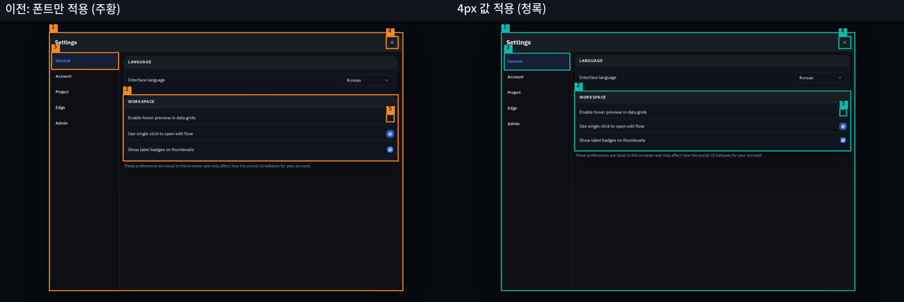
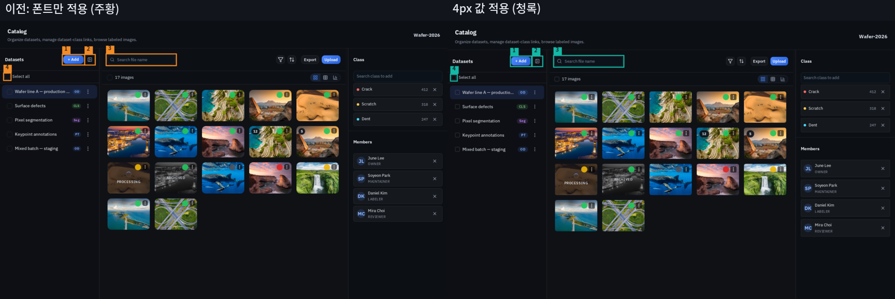
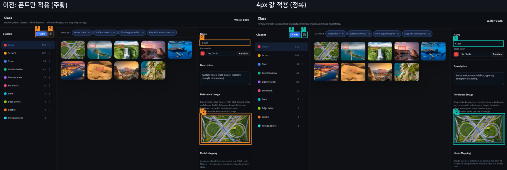
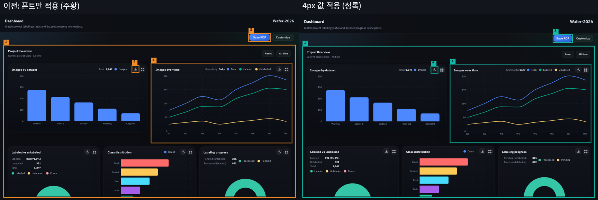
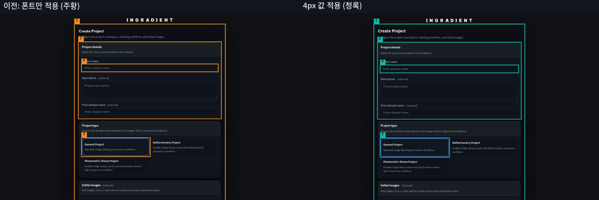
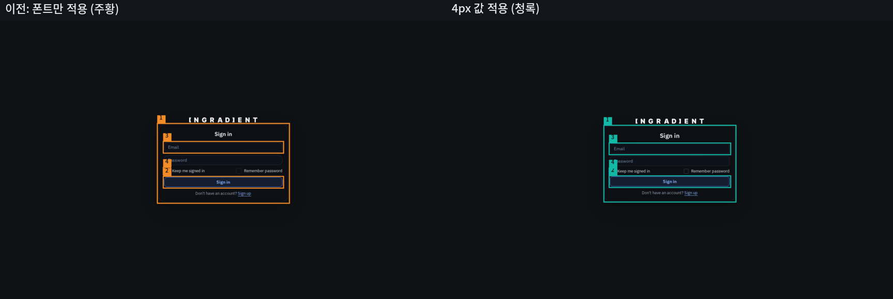
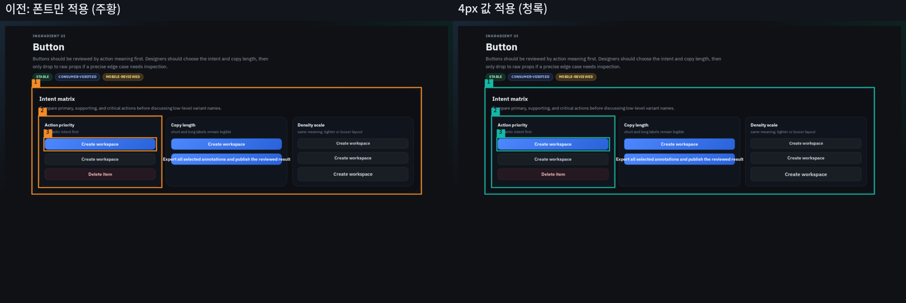
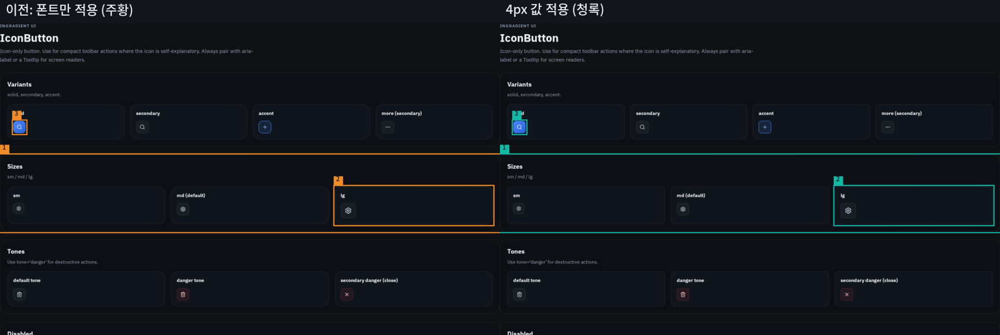
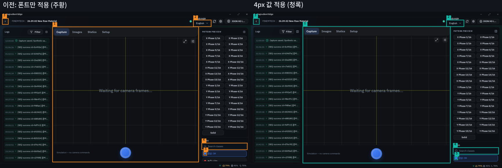
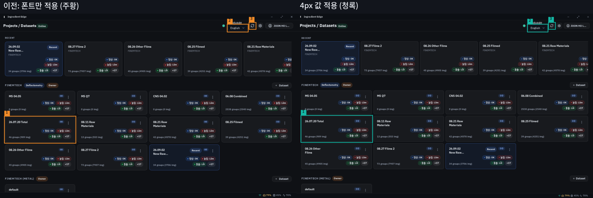
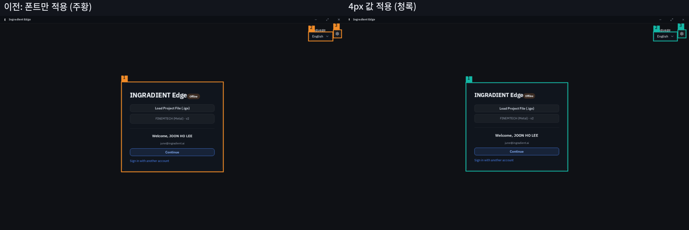
0-3. 폰트
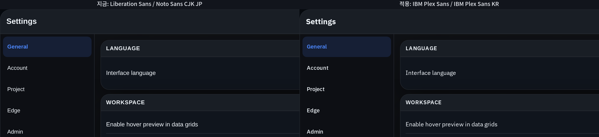
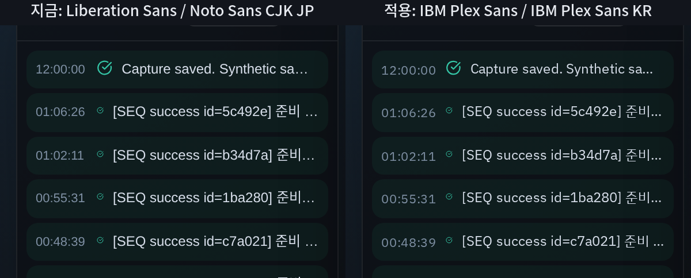
0-4. Edge: 카드 → Platform 구성
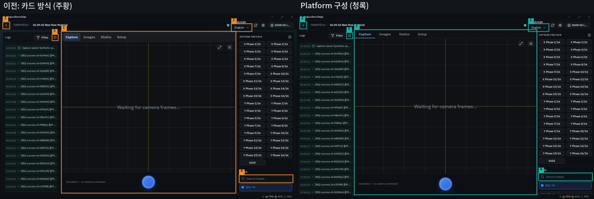
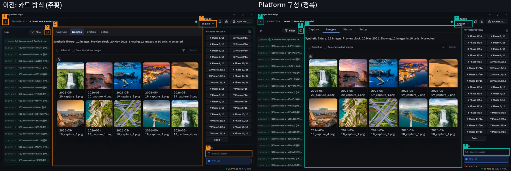
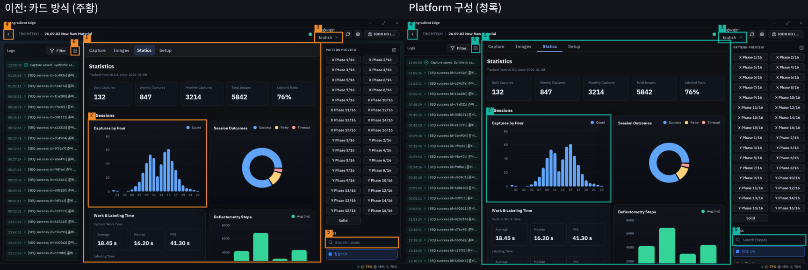
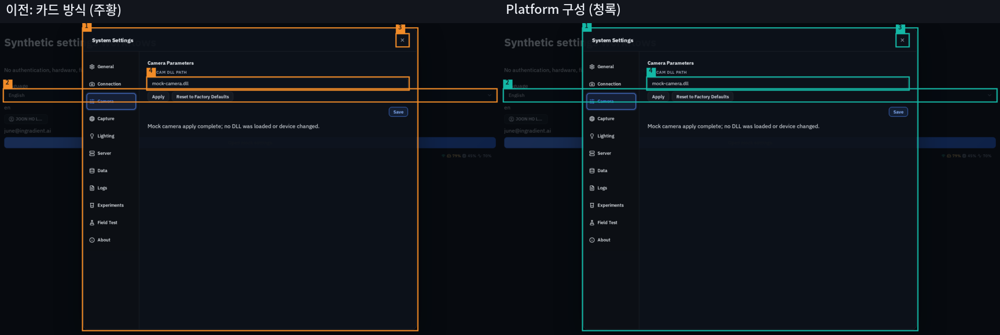
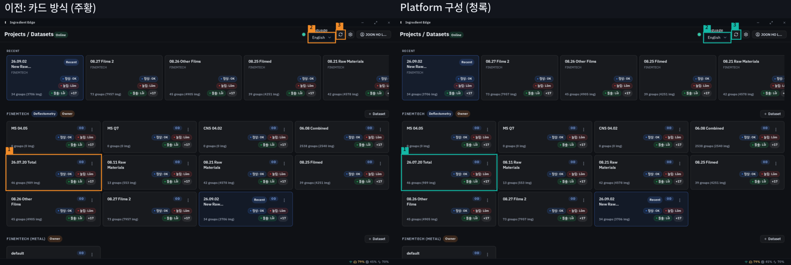
0-5. 남은 이전 작업(DESIGN.md의 받아들인 부채)
- 기존 간격 토큰 이름
--ig-space-*(CSS 약 1,650곳, JSX 약 330곳). 값은 이미 4px로 바뀌었고, 이름만--ig-spacing-{px}로 옮기면 된다. - 역할 간격 토큰(
--ig-gap-*,--ig-inset-*)은 만들었지만 Button 아이콘 간격 외에는 아직 쓰지 않는다. - 깊이별 배경·그림자는 시험 뒤 적용(모서리만 먼저 적용).
- 안 쓰는 컨트롤 높이 토큰(30·34px, 겹치는
mid-plus)은 공개 이름이라 다음 breaking release에서 삭제.
1. 의견이 필요했던 것과 제 추천
"채택"은 시험 빌드에 반영해 진행한 것, "추천"은 제안만 하고 코드에 넣지 않은 것이다. 제품 코드에 들어간 것은 아직 없다(표면 깊이 장치 제외, 화면 변화 0).
| # | 질문 | 제 추천 | 상태 | 근거 |
|---|---|---|---|---|
| 1 | 간격 단계 | 4px 단계(4·8·12·16·20·24·32·40·48)와 광학 보정용 2px | 채택해 진행 | 지금 15단계(5·6·7·10·14·18·22px 포함)를 4의 배수로 모은다 |
| 2 | 지금 간격을 어디로 보낼지 | 6·7→8, 10→8, 14→12, 18→16, 22→24, 28→32, 5→4, 3px→4 | 채택(시험 6061·6060) | 작은 간격은 8로 키우고 중간 간격은 줄여 가장 많이 쓰는 4·8·12·16에 모음. 내림·올림 일괄 변환은 앞서 시험해 비추천 |
| 3 | 간격 토큰 이름 | 새 이름 `--ig-spacing-{px}`(예: `--ig-spacing-8` = 8px)를 만들고 기존 `--ig-space-*`는 사용 중단 표시 | 추천, 아직 적용 안 함 | 기존 이름의 값을 바꾸면 `space-3`이 8→12px처럼 1,600여 곳의 뜻이 조용히 바뀐다. 이름=값이면 혼동이 없다 |
| 4 | 의미 간격 토큰 | 컨트롤 안 4 · 관련 항목 사이 8 · 카드 안쪽 16 · 섹션 사이 24 · 페이지 가장자리 24 | 추천, 아직 적용 안 함 | 컴포넌트가 숫자 대신 역할을 고르게 하면 같은 역할의 간격이 갈라지지 않는다 |
| 5 | 모서리 | 깊이 1·2·3 = 16·12·8px, 버튼·입력창 8px, 작은 요소 4px, 알약 999px | 채택(시험 6063·6060) | 4의 배수이고 바깥이 안쪽보다 둥글다. 작은 요소 6px는 4의 배수가 아니라 4px로 |
| 6 | 아이콘 | 12·16·20·24px, 기본 16px. 28·32px 컨트롤은 16, 40px는 20, 48px 이상은 24 | 채택(시험 6062·6060) | 선 아이콘(lucide)은 24px 격자로 그려져 16·20·24에서 선명하다. 14·18px는 흐려진다 |
| 7 | 컨트롤 높이 | 밀도별 값 유지(compact 28·32·40). 안 쓰는 30·34px 토큰 삭제, 같은 값 이름(xs=sm=28, mid-plus=lg=40) 정리 | 추천, 아직 적용 안 함 | 값은 이미 4의 배수다. 문제는 이름이 겹치는 것 |
| 8 | 버튼 안쪽 | 좌우 여백 8·12·16px(작음·보통·큼), 아이콘-글자 간격 28px 이하 4·그 이상 8px | 간격 시험에 일부 반영 | 지금 좌우 여백 8·14·18·22px는 14·18·22가 4의 배수가 아니다 |
| 9 | 테두리 | 1px(경계)·2px(포커스와 강조) 두 가지. 1.5px(2곳) 없앰. 3px(6곳: 세로 탭 선택 표시, 드롭 영역 점선 등)는 2px로 | 추천, 아직 적용 안 함 | 포커스는 지금 규칙대로 안쪽 2px |
| 10 | 글자 크기 | 11(작은 겹침 표시만)·12·13·14·16·20·24px. 10→11, 15→16, 18→20, 22(미사용) 삭제, 28→24 | 추천, 아직 적용 안 함 | 13·12px가 가장 많이 쓰여(199·188회) 조밀한 화면 성격은 유지 |
| 11 | 줄 높이 | 배수 대신 px: 11·12→16, 13·14→20, 16→24, 20→28, 24→32 | 추천, 아직 적용 안 함 | 13px × 1.5 = 19.5px처럼 배수는 4px 격자를 벗어난다 |
| 12 | 크기·위치에 남의 토큰 빌려 쓰기 | 체크박스 크기·토글 손잡이 위치처럼 다른 축 토큰을 쓰는 곳을 각자 축의 토큰으로 옮김 | 추천, 아직 적용 안 함 | 지금은 간격과 아이콘 중 하나만 바꿔도 토글 손잡이가 어긋난다(아래 4절) |
| 13 | 폰트 IBM Plex 로드 | 의견 필요. 패키지 의존성 추가가 따르므로 제가 정하지 않았다 | 결정 대기 | `DESIGN.md`는 IBM Plex라고 하지만 로드하는 코드가 없어, 이 PC에서는 Liberation Sans로 보인다 |
2. 밤사이 한 일
| 커밋 | 내용 | 확인 |
|---|---|---|
b497769 | 표면 깊이 설계안 문서 | Platform 128개 스토리 측정 근거 포함 |
73a7405 | 0단계: SurfaceDepthProvider, 깊이 토큰 16·12·8px | 전체 스토리(안정 875개) 화면 변화 0, 단위 474 |
81e18ef | 1단계: 공용 표면 10개가 깊이를 읽음 | 전체 스토리 화면 변화 0(다르게 나온 3개는 같은 빌드끼리도 달라지는 진행 막대·타이밍 노이즈), 단위 478, Storybook 브라우저 28 |
1단계에서 MediaDialogContent는 뺐다. 좁은 화면에서 모서리를 0으로 만드는 미디어 쿼리가 있어 화면 적용 단계에서 함께 처리한다.
3. 화면 비교
추천안 합본(간격+모서리+아이콘)을 지금과 같은 화면 크기(1440×900)로 찍었다. 시험은 토큰 값만 바꿔 두 빌드의 DOM이 같으므로, 번호 박스는 DOM 경로로 짝지은 같은 요소다. 각 화면의 대표 요소를 자동으로 골랐다(가장 큰 둥근 상자, 그 안의 상자, 글자 버튼, 아이콘 버튼, 입력창, 작은 요소).
모서리 확대(4배)
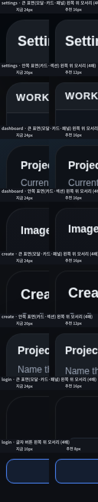
Settings 모달
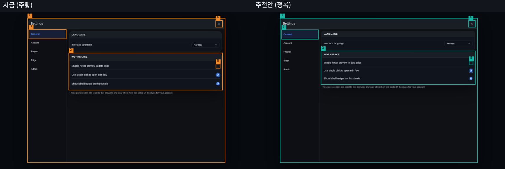
- 1 큰 표면(모달·카드·패널): 모서리 24→16px
- 2 안쪽 표면(카드·섹션): 모서리 20→12px, 크기 870×206→874×186
- 3 글자 버튼: 모서리 10→8px, 크기 207×48→203×48, 좌우 여백 10px→8px
- 4 아이콘 버튼: 모서리 10→8px
- 5 작은 요소(체크박스·칩): 모서리 6→4px, 크기 18×18→16×16
Dataset Catalog
- 1 글자 버튼: 모서리 10→8px, 크기 66×28→62×28, 좌우 여백 14px→12px
- 2 아이콘 버튼: 모서리 10→8px
- 3 입력창: 모서리 14→8px
- 4 작은 요소(체크박스·칩): 모서리 6→4px, 크기 18×18→16×16
Class Management
- 1 큰 표면(모달·카드·패널): 크기 287×172→287×170, 좌우 여백 10px→8px
- 2 안쪽 표면(카드·섹션): 모서리 10→8px, 크기 265×150→269×152
- 3 글자 버튼: 모서리 10→8px, 크기 66×28→62×28, 좌우 여백 14px→12px
- 4 아이콘 버튼: 모서리 10→8px
- 5 입력창: 모서리 6→4px, 좌우 여백 10px→8px
Dashboard
- 1 큰 표면(모달·카드·패널): 모서리 24→16px, 크기 1400×730→1400×728
- 2 안쪽 표면(카드·섹션): 모서리 24→16px, 크기 673×380→673×374, 좌우 여백 18px→16px
- 3 글자 버튼: 모서리 10→8px, 크기 103×32→99×32, 좌우 여백 18px→16px
- 4 아이콘 버튼: 모서리 10→8px
Create Project
- 1 큰 표면(모달·카드·패널): 모서리 24→16px, 크기 720×1006→720×1001, 좌우 여백 18px→16px
- 2 안쪽 표면(카드·섹션): 모서리 20→12px, 크기 682×366→686×366
- 3 글자 버튼: 모서리 20→12px, 크기 325×86→328×88
- 4 입력창: 모서리 14→8px, 크기 652×32→660×32
Login
- 1 큰 표면(모달·카드·패널): 모서리 24→16px, 크기 420×252→420×240, 좌우 여백 18px→16px
- 2 글자 버튼: 모서리 10→8px, 크기 382×32→386×32, 좌우 여백 18px→16px
- 3 입력창: 모서리 14→8px, 크기 382×32→386×32
- 4 작은 요소(체크박스·칩): 모서리 6→4px, 크기 18×18→16×16
Button 컴포넌트
- 1 큰 표면(모달·카드·패널): 모서리 24→16px
- 2 안쪽 표면(카드·섹션): 모서리 20→12px
- 3 글자 버튼: 모서리 10→8px, 좌우 여백 18px→16px
IconButton 컴포넌트
- 1 큰 표면(모달·카드·패널): 모서리 24→16px
- 2 안쪽 표면(카드·섹션): 모서리 20→12px
- 3 아이콘 버튼: 모서리 10→8px
비교에서 보인 것
- Dashboard와 Class는 바깥과 안쪽 모서리가 아직 같다(Dashboard 16=16, Class 참조 이미지 8=8). 위젯 껍데기와 참조 이미지 틀이 아직 깊이를 읽지 않는 컴포넌트라서다. 화면별 적용 단계에서 고친다.
- 체크박스가 18→16px로 작아졌다. 크기를 아이콘 토큰으로 정하고 있어서다(4절).
- 화면 높이는 거의 그대로다(Create 1080→1077px). 대부분 화면이 뷰포트 높이에 고정돼 있어, 간격 변화는 높이보다 안쪽 배치로 나타난다.
- 토큰 값만 바꾼 근사치다. 의미 간격 토큰과 역할별 판단은 반영되지 않았다.
4. 구조 문제: 다른 축의 토큰을 빌려 쓰는 곳
src/components/inputs/toggles.tsx에서 확인했다.
| 요소 | 쓰는 토큰 | 값 | 문제 |
|---|---|---|---|
| 체크박스 크기(53~54행) | icon-lg | 18px | 아이콘 크기를 바꾸면 체크박스가 같이 바뀐다 |
| 토글 손잡이 크기(33~34행) | icon-lg | 18px | 손잡이 크기는 아이콘, 위치는 간격 토큰이다. 둘 중 하나만 바꾸면 손잡이가 트랙에서 어긋난다 |
| 토글 켜짐 위치(32행) | space-8 | 18px | |
| 토글 트랙(15~16행) | control-height-mid-plus, icon-3xl | 40×24px | 너비는 컨트롤 높이, 높이는 아이콘 토큰 |
전수 조사(검사가 위 체크박스 사례를 잡는지 먼저 확인함): 크기(width/height)에 아이콘 토큰을 쓴 곳이 36건(13개 파일), 간격 토큰을 쓴 곳이 36건(19개 파일)이다. 아이콘 토큰 쪽 예: Catalog 이미지 카드 메뉴 버튼(18px), 알림 배지, 개수 배지, 단축키 표시. 간격 토큰 쪽 예: 상태 점(6px), 상태 원(12px). 간격 쪽에는 화면 읽기 전용 1px 처리처럼 정상인 것도 섞여 있다. 전체 목록. 위치 여백(top/right에 간격 토큰)은 정상이라 세지 않았다.
이런 곳이 있으면 간격·아이콘·컨트롤을 따로 정리할 수 없다. 공용 컴포넌트 단계(4번)에서 컴포넌트 크기 토큰(예: --ig-checkbox-size, --ig-switch-*)으로 옮기는 것을 추천한다.
5. 시험 빌드와 재현
| 포트 | 내용 |
|---|---|
| 6057 | 지금(1단계 커밋, 화면은 지금과 같음) |
| 6060 | 추천안 합본: 간격 + 모서리(깊이 Provider 켬) + 아이콘 |
| 6061 | 간격만 |
| 6062 | 아이콘만 |
| 6063 | 모서리만 |
시험 서버는 /tmp 빌드라 재부팅하면 사라진다. 재현 자료는 assets/2026-10-27-foundations/에 있다: 시험 패치(patches/), 빌드 스크립트(foundations-trials.sh), 측정·캡처(capture-measure.mjs, measure.json), 주석(annotate-found.mjs, zoom-corners.mjs). 모서리 시험은 Storybook 미리보기 전체에 Provider를 켜서 Edge 스토리도 바뀐다. 실제 적용 때는 Platform만 켠다.
6. 다음 단계
- 1절에서 뒤집을 항목을 알려주시면 그 값으로 바꾼다.
DESIGN.md재작성 초안을 만들었다:DESIGN.draft.md(저장소 루트). 색·모션·접근성·Platform 계약은 유지하고, 3~9절(글자, 간격, 모양, 크기, 테두리·포커스, 표면, 컴포넌트 규칙)을 위 추천값으로 새로 썼다. 값마다 결정 번호(D1~D13)와 상태(코드에 있음/제안)를 붙였다. 값이 코드에 들어간 뒤DESIGN.md와 교체한다.- 공용 컴포넌트 수정 → Platform 화면별 적용 → Edge 순서는 그대로다.
7. 4번 단계(공용 컴포넌트) 작업 목록
공용 컴포넌트는 Platform과 Edge가 함께 쓰므로 바꾸면 Edge 화면도 바뀐다. 밤사이에는 Edge 화면을 바꾸지 않기로 해서 코드는 건드리지 않고 목록만 만들었다. 숫자는 feat/surface-depth 기준으로 센 값이다.
| # | 작업 | 범위 | 결정 |
|---|---|---|---|
| 1 | 새 토큰 추가(--ig-spacing-*, 의미 간격, 컴포넌트 크기, 글자·줄 높이). 아직 아무도 쓰지 않으므로 화면 변화 0 | 토큰 파일 | D1·D3·D4·D10·D11·D12 |
| 2 | 크기에 다른 축 토큰을 빌려 쓰는 곳을 컴포넌트 크기 토큰으로 | 72건(아이콘 36·간격 36) | D12 |
| 3 | 숫자로 넣은 아이콘 크기를 아이콘 토큰으로 | 10곳, 8개 파일(검색창, 복사 버튼, 날짜 선택, 표 등) | D6 |
| 4 | Button 좌우 여백과 아이콘-글자 간격 | button-types.ts, button-root.tsx | D8 |
| 5 | compact 밀도 xs 24px, 안 쓰는·겹치는 높이 토큰 정리 | 밀도 토큰 | D7 |
| 6 | 테두리 1.5·3px를 2px로 | 8곳 | D9 |
| 7 | 아직 깊이를 읽지 않는 표면을 깊이 인식으로(대시보드 위젯 껍데기, 참조 이미지 틀, 페이지 패널, 사이드바 등) | 분류 53곳 중 남은 43곳 + 위젯 Card 2곳 | D5 |
| 8 | MediaDialogContent 깊이 적용과 좁은 화면 모서리 0 유지 | 1곳 | D5 |
| 9 | 기존 간격 토큰 사용처를 새 토큰으로(화면별 이전 단계에서) | CSS 1,646곳 + JSX 327곳 | D1~D4 |
진행 순서 제안: 1번(화면 변화 0, 표면 깊이 0단계와 같은 방식으로 검증) → 2~6번(컴포넌트별로 Storybook에서 확인) → 7~9번은 화면별 이전(5번 단계)과 함께.